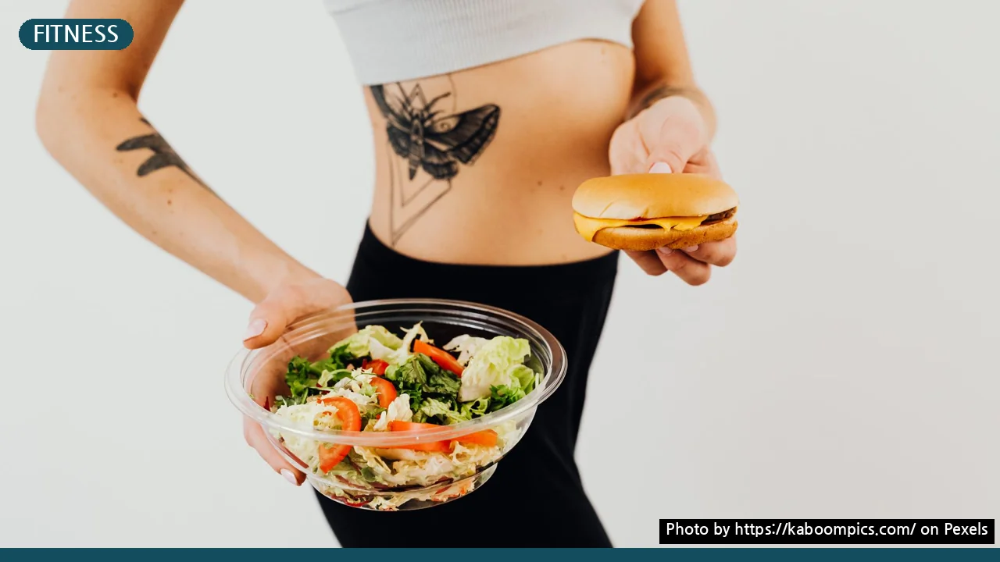
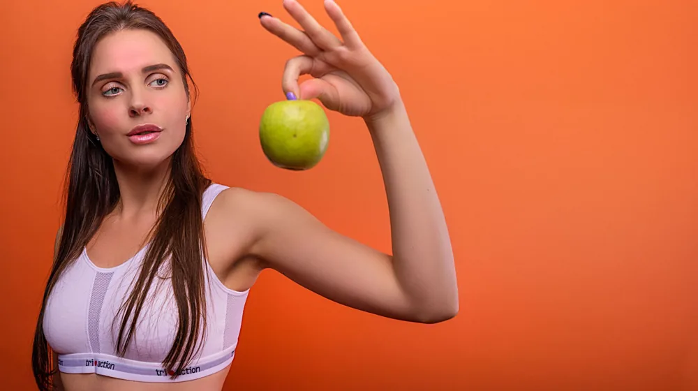

살이 안 빠져 답답한가요? 다이어트 정체기 극복 체크리스트 5가지
사진: https://kaboompics.com/ / Pexels (무료 이미지, 출처 표기)
다이어트 정체기, 왜 찾아올까요?

열심히 노력했지만 어느 순간 체중 감소가 멈춰 답답함을 느끼는 경험, 다이어트 정체기(Plateau)는 많은 분이 겪는 자연스러운 현상입니다. 우리 몸은 항상성을 유지하려는 경향이 강해, 지속적인 칼로리 제한이나 운동 변화에 적응하며 효율적인 에너지 소비 모드로 전환됩니다. 초기에는 체중이 빠르게 줄지만, 몸이 새로운 환경에 익숙해지면서 대사 활동을 최소화하려는 방어 기제가 작동하는 것이죠.
이는 지방 감소 속도가 둔화되거나, 심지어 일시적으로 체중이 늘어나는 것처럼 보이게 만들기도 합니다. 하지만 정체기는 실패의 신호가 아니라, 몸이 다음 단계로 나아가기 위해 잠시 숨을 고르는 시간이라고 이해하는 것이 중요합니다.
정체기 극복 핵심 체크리스트: 지금 바로 점검하세요
정체기를 현명하게 극복하려면 현재의 다이어트 방식을 객관적으로 돌아보고 변화를 주는 것이 필요합니다. 아래 체크리스트를 통해 자신의 식단, 운동, 생활 습관 전반을 점검해 보세요. 예상치 못한 부분에서 정체기의 원인을 찾을 수도 있습니다.
- 칼로리 섭취량 변화: 초기 다이어트 목표 체중에 맞춰 설정한 칼로리 섭취량이 현재 몸무게에는 너무 많지는 않은가요?
- 식단 구성의 다양성: 특정 영양소에 치우치거나 건강하지 않은 식품을 '다이어트 식품'으로 오해하고 있지는 않은가요?
- 운동 강도 및 종류: 늘 같은 운동만 반복하며 몸이 적응해 버린 것은 아닌가요? 강도나 종류에 변화를 줄 필요는 없나요?
- 수면의 질과 양: 불규칙한 수면 패턴이나 수면 부족이 스트레스 호르몬(코르티솔) 분비를 촉진하고 있지는 않나요?
- 스트레스 관리: 다이어트 자체가 스트레스가 되어 폭식이나 식욕 증가로 이어지는 악순환은 없는지 점검해야 합니다.
식단 점검: 숨겨진 칼로리 원인을 찾아라
식단은 다이어트 정체기를 푸는 핵심 열쇠 중 하나입니다. 흔히 놓치는 부분은 '숨겨진 칼로리'입니다. 무심코 마시는 달콤한 커피 한 잔, 건강하다고 생각했던 과일 주스, 드레싱 듬뿍 뿌린 샐러드 등이 예상보다 높은 칼로리를 포함할 수 있습니다. 작은 간식이나 시식도 누적되면 큰 영향을 미칩니다.
식사 일기를 작성하여 자신이 무엇을, 얼마나 먹었는지 정확히 기록하는 것이 도움이 됩니다. 또한, 단백질 섭취를 늘리고 복합 탄수화물과 섬유질이 풍부한 채소를 충분히 섭취하여 포만감을 높이고 영양 균형을 맞추는 것이 중요합니다. 2026년 08월 기준으로 식품의약품안전처는 가공식품 선택 시 영양성분표 확인을 권장하고 있습니다.
운동 점검: 몸은 똑똑하게 변화에 적응합니다
초반에는 효과를 봤던 운동이라도 지속적으로 같은 방식으로 반복하면 몸이 적응하여 에너지 소비 효율이 높아집니다. 이는 다이어트 정체기의 주요 원인이 될 수 있습니다. 우리 몸은 똑똑하여 특정 자극에 익숙해지면 그 자극을 이겨내기 위해 더 적은 에너지를 사용하기 시작합니다.
정체기 극복을 위해서는 운동 루틴에 변화를 주는 것이 좋습니다. 웨이트 트레이닝의 중량을 늘리거나 반복 횟수를 조정하고, 유산소 운동의 강도나 시간을 변경해 보세요. 인터벌 트레이닝(고강도 운동과 저강도 운동을 번갈아 하는 방식)이나 새로운 종류의 운동(예: 수영, 요가, 등산)을 추가하는 것도 몸에 새로운 자극을 주어 대사량을 높이는 데 효과적입니다.
생활 습관 점검: 수면과 스트레스도 중요해요
다이어트 정체기는 단순히 식단이나 운동만의 문제가 아닐 수 있습니다. 수면 부족은 식욕을 조절하는 호르몬(렙틴, 그렐린)의 불균형을 초래하여 식욕을 증가시키고 신진대사를 저하시킬 수 있습니다. 성인은 하루 7~9시간의 규칙적인 수면을 확보하는 것이 권장됩니다.
또한, 만성적인 스트레스는 체내 코르티솔 수치를 높여 지방 축적을 촉진하고 체중 감소를 방해합니다. 명상, 가벼운 산책, 취미 활동 등 자신에게 맞는 스트레스 해소법을 찾아 꾸준히 실천하는 것이 중요합니다. 충분한 수분 섭취도 노폐물 배출과 신진대사 활성화에 도움이 되므로 하루 2리터 이상 물을 마시는 습관을 들이세요.
전문가와 상담해야 할 때는 언제일까요?
위의 체크리스트와 노력에도 불구하고 2~4주 이상 정체기가 지속되거나, 다이어트 중 특별한 신체 이상(극심한 피로, 탈모, 생리 불순 등)을 겪는다면 전문가의 도움을 고려해 보는 것이 좋습니다.
의사나 영양사와의 상담을 통해 혹시 모를 기저 질환이나 호르몬 불균형 여부를 확인하고, 개인에게 최적화된 식단 및 운동 계획을 세울 수 있습니다. 이는 단순히 체중 감소뿐 아니라 장기적인 건강 관점에서도 매우 중요합니다. 정확한 사항은 공식 홈페이지나 해당 기관에서 다시 확인하시길 권장합니다. (2026년 08월 기준)
🔗 이 글도 함께 보면 좋아요: 내 체질에 맞는 음식? 태양인부터 소음인까지 속 시원한 체크리스트